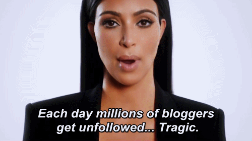

из 15 топ новостных сайтов используют этот шрифт. Строгий смелый и простой. Идеален для заголовков. Да про него даж фильм сняли.
используют именно этот шрифт. Чёткий даже при низком разрешении и традиционный. Отличный выбор для консервативной аудитории.
используют с тех пор, как простота стала стандартом

А если я будущая-блоггерсмульонамиподписчиков?
блоггеров выбирают именно его. Бесплатный, простой и не совсем стандартный. Ну и Georgia, Trebuchet, Helvetica и Arial
Создан со специальной целью. Некоторые создавались под бренд и только с ним ассоциируются
Существует шрифт для упрощения работы редактора и корректора, шрифт для всех транспортных знаков Англии, шрифт для печати с наименьшим экологическим следом. #Выбирайнехочу